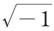
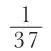

中文
中文A. S. Eddington
Editor’s Note
This supplement contains a somewhat light-hearted address on “the end of the world” that Arthur Eddington delivered at the Mathematical Association. One must first ask “which end?”, he says. Space itself may have no end: current cosmology suggested a universe shaped like the surface of a sphere, finite but without edges. As for time, the second law of thermodynamics suggests that the entire universe will eventually reach a state of thermodynamic equilibrium marked by complete disorganisation. However, if time is infinite then every conceivable fluctuation in the universe’s particles will happen, temporarily disturbing this equilibrium. Eddington ends by predicting how the world will really end: as a ball of radiation growing ever larger, roughly doubling its size every 1,500 million years. 中文
THE world—or space-time—is a four-dimensional continuum, and consequently offers a choice of a great many directions in which we might start off to look for an end; and it is by no means easy to describe “from the standpoint of mathematical physics” the direction in which I intend to go. I have therefore to examine at some length the preliminary question, Which end? 中文
Spherical Space
We no longer look for an end to the world in its space dimensions. We have reason to believe that so far as its space dimensions are concerned the world is of spherical type. If we proceed in any direction in space we do not come to an end of space, nor do we continue on to infinity; but, after travelling a certain distance (not inconceivably great), we find ourselves back at our starting-point, having “gone round the world”. A continuum with this property is said to be finite but unbounded. The surface of a sphere is an example of a finite but unbounded two-dimensional continuum; our actual three-dimensional space is believed to have the same kind of connectivity, but naturally the extra dimension makes it more difficult to picture. If we attempt to picture spherical space, we have to keep in mind that it is the surface of the sphere that is the analogue of our three-dimensional space; the inside and the outside of the sphere are fictitious elements in the picture which have no analogue in the actual world. 中文
We have recently learnt, mainly through the work of Prof. Lemaître, that this spherical space is expanding rather rapidly. In fact, if we wish to travel round the world and get back to our starting-point, we shall have to move faster than light; because, whilst we are loitering on the way, the track ahead of us is lengthening. It is like trying to run a race in which the finishing-tape is moving ahead faster than the runners. We can picture the stars and galaxies as embedded in the surface of a rubber balloon which is being steadily inflated; so that, apart from their individual motions and the effects of their ordinary gravitational attraction on one another, celestial objects are becoming farther and farther apart simply by the inflation. It is probable that the spiral nebulae are so distant that they are very little affected by mutual gravitation and exhibit the inflation effect in its pure form. It has been known for some years that they are scattering apart rather rapidly, and we accept their measured rate of recession as a determination of the rate of expansion of the world. 中文
From the astronomical data it appears that the original radius of space was 1,200 million light years. Remembering that distances of celestial objects up to several million light years have actually been measured, that does not seem overwhelmingly great. At that radius the mutual attraction of the matter in the world was just sufficient to hold it together and check the tendency to expand. But this equilibrium was unstable. An expansion began, slow at first; but the more widely the matter was scattered the less able was the mutual gravitation to check the expansion. We do not know the radius of space today, but I should estimate that it is not less than ten times the original radius. 中文
At present our numerical results depend on astronomical observations of the speed of scattering apart of the spiral nebulae. But I believe that theory is well on the way to obtaining the same results independently of astronomical observation. Out of the recession of the spiral nebulae we can determine not only the original radius of the universe but also the total mass of the universe, and hence the total number of protons in the world. I find this number to be either 7×1078 or 14×1078.† I believe that this number is very closely connected with the ratio of the electrostatic and the gravitational units of force, and, apart from a numerical coefficient, is equal to the square of the ratio. If F is the ratio of the electrical attraction between a proton and electron to their gravitational attraction, we find F2 = 5.3×1078. There are theoretical reasons for believing that the total number of particles in the world is αF2, where α is a simple geometrical factor (perhaps involving π). It ought to be possible before long to find a theoretical value of α, and so make a complete connexion between the observed rate of expansion of the universe and the ratio of electrical and gravitational forces. 中文
Signposts for Time
I must not dally over space any longer but must turn to time. The world is closed in its space dimensions but is open in both directions in its time dimension. Proceeding from “here” in any direction in space we ultimately come back to “here”; but proceeding from “now” towards the future or the past we shall never come across “now” again. There is no bending round of time to bring us back to the moment we started from. In mathematics this difference is provided for by the symbol

, just as the same symbol crops up in distinguishing a closed ellipse and an open hyperbola. 中文
If, then, we are looking for an end of the world—or, instead of an end, an indefinite continuation for ever and ever—we must start off in one of the two time directions. How shall we decide which of these two directions to take? It is an important question. Imagine yourself in some unfamiliar part of space-time so as not to be biased by conventional landmarks or traditional standards of reference. There ought to be a signpost with one arm marked “To the future” and the other arm marked “To the past”. My first business is to find this signpost, for if I make a mistake and go the wrong way I shall lead you to what is no doubt an “end of the world”, but it will be that end which is more usually described as the beginning. 中文
In ordinary life the signpost is provided by consciousness. Or perhaps it would be truer to say that consciousness does not bother about signposts; but wherever it finds itself it goes off on urgent business in a particular direction, and the physicist meekly accepts its lead and labels the course it takes “To the future”. It is an important question whether consciousness in selecting its direction is guided by anything in the physical world. If it is guided, we ought to be able to find directly what it is in the physical world which makes it a one-way street for conscious beings. The view is sometimes held that the “going on of time” does not exist in the physical world at all and is a purely subjective impression. According to that view, the difference between past and future in the material universe has no more significance than the difference between right and left. The fact that experience presents space-time as a cinematograph film which is always unrolled in a particular direction is not a property or peculiarity of the film (that is, the physical world) but of the way it is inserted into the cinematograph (that is, consciousness). In fact, the one-way traffic in time arises from the way our material bodies are geared on to our consciousness:
“Nature has made our gears in such a way
That we can never get into reverse”. 中文
If this view is right, “the going on of time” should be dropped out of our picture of the physical universe. Just as we have dropped the old geocentric outlook and other idiosyncrasies of our circumstances as observers, so we must drop the dynamic presentation of events which is no part of the universe itself but is introduced in our peculiar mode of apprehending it. In particular, we must be careful not to treat a past-to-future presentation of events as truer or more significant than a future-to-past presentation. We must, of course, drop the theory of evolution, or at least set alongside it a theory of anti-evolution as equally significant. 中文
If anyone holds this view, I have no argument to bring against him. I can only say to him, “You are a teacher whose duty it is to inculcate in youthful minds a true and balanced outlook. But you teach (or without protest allow your colleagues to teach) the utterly one-sided doctrine of evolution. You teach it not as a colourless schedule of facts but as though there were something significant, perhaps even morally inspiring, in the progress from formless chaos to perfected adaptation. This is dishonest; you should also treat it from the equally significant point of view of anti-evolution and discourse on the progress from future to past. Show how from the diverse forms of life existing today Nature anti-evolved forms which were more and more unfitted to survive, until she reached the sublime crudity of the palaeozoic forms. Show how from the solar system Nature anti-evolved a chaotic nebula. Show how, in the course of progress from future to past, Nature took a universe which, with all its faults, is not such a bad effort of architecture and—in short, made a hash of it.” 中文
Entropy and Disorganisation
Leaving aside the guidance of consciousness, we have found it possible to discover a kind of signpost for time in the physical world. The signpost is of rather a curious character, and I would scarcely venture to say that the discovery of the signpost amounts to the same thing as the discovery of an objective “going on of time” in the universe. But at any rate it serves to discriminate past and future, whereas there is no corresponding objective distinction of left and right. The distinction is provided by a certain measurable quantity called entropy. Take an isolated system and measure its entropy S at two instants t1 and t2. We want to know whether t1 is earlier or later than t2 without employing the intuition of consciousness, which is too disreputable a witness to trust in mathematical physics. The rule is that the instant which corresponds to the greater entropy is the later. In mathematical form
dS/dt is always positive.
This is the famous second law of thermodynamics. 中文
Entropy is a very peculiar conception, quite unlike the conceptions ordinarily employed in the classical scheme of physics. We may most conveniently describe it as the measure of disorganisation of a system. Accordingly, our signpost for time resolves itself into the law that disorganisation increases from past to future. It is one of the most curious features of the development of physics that the entropy outlook grew up quietly alongside the ordinary analytical outlook for a great many years. Until recently it always “played second fiddle”; it was convenient for getting practical results, but it did not pretend to convey the most penetrating insight. But now it is making a bid for supremacy, and I think there is little doubt that it will ultimately drive out its rival. 中文
There are some important points to emphasise. First, there is no other independent signpost for time; so that if we discredit or “explain away” this property of entropy, the distinction of past and future in the physical world will disappear altogether. Secondly, the test works consistently; isolated systems in different parts of the universe agree in giving the same direction of time. Thirdly, in applying the test we must make certain that our system is strictly isolated. Evolution teaches us that more and more highly organised systems develop as time goes on; but this does not contradict the conclusion that on the whole there is a loss of organisation. It is partly a question of definition of organisation; from the evolutionary point of view it is quality rather than quantity of organisation that is noticed. But, in any case, the high organisation of these systems is obtained by draining organisation from other systems with which they come in contact. A human being as he grows from past to future becomes more and more highly organised—at least, he fondly imagines so. But if we make an isolated system of him, that is to say, if we cut off his supply of food and drink and air, he speedily attains a state which everyone would recognise as “a state of disorganisation”. 中文
It is possible for the disorganisation of a system to become complete. The state then reached is called thermodynamic equilibrium. The entropy can increase no further, and, since the second law of thermodynamics forbids a decrease, it remains constant. Our signpost for time disappears; and so far as that system is concerned, time ceases to go on. That does not mean that time ceases to exist; it exists and extends just as space exists and extends, but there is no longer any one-way property. It is like a one-way street on which there is never any traffic. 中文
Let us return to our signpost. Ahead there is ever-increasing disorganisation. Although the sum total of organisation is diminishing, certain parts of the universe are exhibiting a more and more highly specialised organisation; that is the phenomenon of evolution. But ultimately this must be swallowed up in the advancing tide of chance and chaos, and the whole universe will reach a state of complete disorganisation—a uniform featureless mass in thermodynamic equilibrium. This is the end of the world. Time will extend on and on, presumably to infinity. But there will be no definable sense in which it can be said to go on. Consciousness will obviously have disappeared from the physical world before thermodynamical equilibrium is reached, and dS/dt having vanished, there will remain nothing to point out a direction in time. 中文
The Beginning of Time
It is more interesting to look in the opposite direction—towards the past. Following time backwards, we find more and more organisation in the world. If we are not stopped earlier, we must come to a time when the matter and energy of the world had the maximum possible organisation. To go back further is impossible. We have come to an abrupt end of space-time—only we generally call it the “beginning”. 中文
I have no “philosophical axe to grind” in this discussion. Philosophically, the notion of a beginning of the present order of Nature is repugnant to me. I am simply stating the dilemma to which our present fundamental conception of physical law leads us. I see no way round it; but whether future developments of science will find an escape I cannot predict. The dilemma is this:—Surveying our surroundings, we find them to be far from a “fortuitous concourse of atoms”. The picture of the world, as drawn in existing physical theories, shows arrangement of the individual elements for which the odds are multillions to 1 against an origin by chance. Some people would like to call this non-random feature of the world purpose or design; but I will call it non-committally anti-chance. We are unwilling to admit in physics that anti-chance plays any part in the reactions between the systems of billions of atoms and quanta that we study; and indeed all our experimental evidence goes to show that these are governed by the laws of chance. Accordingly, we sweep anti-chance out of the laws of physics—out of the differential equations. Naturally, therefore, it reappears in the boundary conditions, for it must be got into the scheme somewhere. By sweeping it far enough away from the sphere of our current physical problems, we fancy we have got rid of it. It is only when some of us are so misguided as to try to get back billions of years into the past that we find the sweepings all piled up like a high wall and forming a boundary—a beginning of time—which we cannot climb over. 中文
A way out of the dilemma has been proposed which seems to have found favour with a number of scientific workers. I oppose it because I think it is untenable, not because of any desire to retain the present dilemma. I should like to find a genuine loophole. But that does not alter my conviction that the loophole that is at present being advocated is a blind alley. I must first deal with a minor criticism. 中文
I have sometimes been taken to task for not sufficiently emphasising in my discussion of these problems that the results about entropy are a matter of probability, not of certainty. I said above that if we observe a system at two instants, the instant corresponding to the greater entropy will be the later. Strictly speaking, I ought to have said that for a smallish system the chances are, say, 1020 to 1, that it is the later. Some critics seem to have been shocked at my lax morality in making such a statement, when I was well aware of the 1 in 1020 chance of its being wrong. Let me make a confession. I have in the past twenty-five years written a good many papers and books, broadcasting a large number of statements about the physical world. I fear that for not many of these statements is the risk of error so small as 1 in 1020. Except in the domain of pure mathematics, the trustworthiness of my conclusions is usually to be rated at nearer 10 to 1 than 1020 to 1; even that may be unduly boastful. I do not think it would be for the benefit of the world that no statement should be allowed to be made if there were a 1 in 1020 chance of its being untrue; conversation would languish somewhat. The only persons entitled to open their mouths would presumably be the pure mathematicians. 中文
Fluctuations
The loophole to which I referred depends on the occurrence of chance fluctuations. If we have a number of particles moving about at random, they will in the course of time go through every possible configuration, so that even the most orderly, the most non-chance configuration, will occur by chance if only we wait long enough. When the world has reached complete disorganisation (thermodynamic equilibrium) there is still infinite time ahead of it, and its elements will thus have opportunity to take up every possible configuration again and again. If we wait long enough, a number of atoms will, just by chance, arrange themselves in systems as they are at present arranged in this room; and, just by chance, the same sound-waves will come from one of these systems of atoms as are at present emerging from my lips; they will strike the ears of other systems of atoms, arranged just by chance to resemble you, and in the same stages of attention or somnolence. This mock Mathematical Association meeting must be repeated many times over—an infinite number of times, in fact—before t reaches +∞. Do not ask me whether I expect you to believe that this will really happen.‡ 中文
“Logic is logic. That’s all I say.” 中文
So, after the world has reached thermodynamical equilibrium the entropy remains steady at its maximum value, except that “once in a blue moon” the absurdly small chance comes off and the entropy drops appreciably below its maximum value. When this fluctuation has died out, there will again be a very long wait for another coincidence giving another fluctuation. It will take multillions of years, but we have all infinity of time before us. There is no limit to the amount of the fluctuation, and if we wait long enough we shall come across a big fluctuation which will take the world as far from thermodynamical equilibrium as it is at the present moment. If we wait for an enormously longer time, during which this huge fluctuation is repeated untold numbers of times, there will occur a still larger fluctuation which will take the world as far from thermodynamical equilibrium as it was one second ago. 中文
The suggestion is that we are now on the downward slope of one of these fluctuations. It has quite a pleasant subtlety. Is it chance that we happen to be running down the slope and not toiling up the slope? Not at all. So far as the physical universe is concerned, we have defined the direction of time as the direction from greater to less organisation, so that, on whichever side of the mountain we stand, our signpost will point downhill. In fact, on this theory, the going on of time is not a property of time in general, but is a property of the slope of the fluctuation on which we are standing. Again, although the theory postulates a universe involving an extremely improbable coincidence, it provides an infinite time during which the most improbable coincidence might occur. Nevertheless, I feel sure that the argument is fallacious. 中文
If we put a kettle of water on the fire there is a chance that the water will freeze. If mankind goes on putting kettles on the fire until t = ∞, the chance will one day come off and the individual concerned will be somewhat surprised to find a lump of ice in his kettle. But it will not happen to me. Even if tomorrow the phenomenon occurs before my eyes, I shall not explain it this way. I would much sooner believe in interference by a demon than in a coincidence of that kind coming off; and in doing so I shall be acting as a rational scientist. The reason why I do not at present believe that devils interfere with my cooking arrangements and other business, is because I have become convinced by experience that Nature obeys certain uniformities which we call laws. I am convinced because these laws have been tested over and over again. But it is possible that every single observation from the beginning of science which has been used as a test, has just happened to fit in with the law by a chance coincidence. It would be an improbable coincidence, but I think not quite so improbable as the coincidence involved in my kettle of water freezing. So if the event happens and I can think of no other explanation, I shall have to choose between two highly improbable coincidences: (a) that there are no laws of Nature and that the apparent uniformities so far observed are merely coincidences; (b) that the event is entirely in accordance with the accepted laws of Nature, but that an improbable coincidence has happened. I choose the former because mathematical calculation indicates that it is the less improbable. I reckon a sufficiently improbable coincidence as something much more disastrous than a violation of the laws of Nature; because my whole reason for accepting the laws of Nature rests on the assumption that improbable coincidences do not happen—at least, that they do not happen in my experience.§ 中文
Similarly, if logic predicts that a mock meeting of the Mathematical Association will occur just by a fortuitous arrangement of atoms before t = ∞, I reply that I cannot possibly accept that as being the explanation of a meeting of the Mathematical Association in t = 1931. We must be a little careful over this, because there is a trap for the unwary. The year 1931 is not an absolutely random date between t = –∞ and t = +∞. We must not argue that because for only 1/xth of time between t = –∞ and t = ∞ a fluctuation as great as the present one is in operation, therefore the chances are x to 1 against such a fluctuation occurring in the year 1931. For the purposes of the present discussion, the important characteristic of the year 1931 is that it belongs to a period during which there exist in the universe beings capable of speculating about the universe and its fluctuations. Now I think it is clear that such creatures could not exist in a universe in thermodynamical equilibrium. A considerable degree of deviation is required to permit of living beings. Therefore it is perfectly fair for supporters of this suggestion to wipe out of account all those multillions of years during which the fluctuations are less than the minimum required to permit of the development and existence of mathematical physicists. That greatly diminishes x, but the odds are still overpowering. The crude assertion would be that (unless we admit something which is not chance in the architecture of the universe) it is practically certain that at any assigned date the universe will be almost in the state of maximum disorganisation. The amended assertion is that (unless we admit something which is not chance in the architecture of the universe) it is practically certain that a universe containing mathematical physicists will at any assigned date be in the state of maximum disorganisation which is not inconsistent with the existence of such creatures. I think it is quite clear that neither the original nor the amended version applies. We are thus driven to admit anti-chance; and apparently the best thing we can do with it is to sweep it up into a heap at the beginning of time, as I have already described. 中文
The connexion between our entropy signpost and that dynamic quality of time which we describe as “going on” or “becoming” leads to very difficult questions which I cannot discuss here. The puzzle is that the signpost seems so utterly different from the thing of which it is supposed to be the sign. The one thing on which I have to insist is that, apart from consciousness, the increase of entropy is the only trace that we can find of a one-way direction of time. I was once asked a ribald question: How does an electron (which has not the resource of consciousness) remember which way time is going? Why should it not inadvertently turn round and, so to speak, face time the other way? Does it have to calculate which way entropy is increasing in order to keep itself straight? I am inclined to think that an electron does do something of that sort. For an electric charge to face the opposite way in time is the same thing as to change the sign of the charge. So if an electron mistook the way time was going it would turn into a positive charge. Now, it has been one of the troubles of Dr. P. A. M. Dirac that in the mathematical calculations based on his wave equation the electrons do sometimes forget themselves in this way. As he puts it, there is a finite chance of the charge changing sign after an encounter. You must understand that they only do this in the mathematical problems, not in real life. It seems to me there is good reason for this. A mathematical problem deals with, say, four electric charges at the most; that is about as many as a calculator would care to take on. Accordingly, the unfortunate electron in the problem has to make out the direction of past to future by watching the organisation of three other charges. Naturally, it is deceived sometimes by chance coincidences which may easily happen when there are only three particles concerned; and so it has a good chance of facing the wrong way and becoming a positive charge. But in any real experiment we work with apparatus containing billions of particles—ample to give the electron its bearings with certainty. Dirac’s theory predicts things which never happen, simply because it is applied to problems which never occur in Nature. When it is applied to four particles alone in the universe, the analysis very properly brings out the fact that in such a system there could be no steady one-way direction of time, and vagaries would occur which are guarded against in our actual universe consisting of about 1079 particles. 中文
Heisenberg’s Principle
A discussion of the properties of time would be incomplete without a reference to the principle of indeterminacy, which was formulated by Heisenberg in 1927 and has been generally accepted. It had already been realised that theoretical physics was drifting away from a deterministic basis; Heisenberg’s principle delivered the knock-out blow, for it actually postulated a certain measure of indeterminacy or unpredictability of the future as a fundamental law of the universe. This change of view seems to make the progress of time a much more genuine thing than it used to be in classical physics. Each passing moment brings into the world something new—something which is not merely a mathematical extrapolation of what was already there. 中文
The deterministic view which held sway for at least two centuries was that if we had complete data as to the state of the whole universe during, say, the first minute of the year 1600, it would be merely a mathematical exercise to deduce everything that has happened or will happen at any date in the future or past. The future would be determined by the present as the solution of a differential equation is determined by the boundary conditions. To understand the new view, it is necessary to realise that there is a risk of begging the question when we use the phrase “complete data”. All our knowledge of the physical world is inferential. I have no direct acquaintance with my pen as an object in the physical world; I infer its existence and properties from the light waves which fall on my eyes, the pressure waves which travel up my muscles, and so on. 中文
Precisely the same scheme of inference leads us to infer the existence of things in the past. Just as I infer a physical object, namely, my pen, as the cause of certain visual sensations now, so I may infer an infection some days ago as the cause of an attack of measles. If we follow out this principle completely we shall infer causes in the year 1600 for all the events which we know to have happened in 1930. At first sight it would seem that these inferred causes have just as much status in the physical world as my fountain pen, which is likewise an inferred cause. So the determinist thinks he has me in a cleft stick. If the scientific worker poking about in the universe in 1600 comes across these causes, then he has all the data for making a correct prediction for 1930; if he does not, then he clearly has not complete knowledge of the universe in 1600, for these causes have as much right to the status of physical entities as any of our other inferences. 中文
I need scarcely stop to show how this begs the question by arbitrarily prescribing what we should deem to be complete knowledge of the universe in 1600, irrespective of whether there is any conceivable way in which this knowledge could be obtained at the time. What Heisenberg discovered was that (at least in a wide range of phenomena embracing the whole of atomic physics and electron theory) there is a provision of Nature that just half of the data demanded by our determinist friend might with sufficient diligence be collected by the investigators in 1600, and that complete knowledge of this half would automatically exclude all knowledge of the other half. It is an odd arrangement, because you can take your choice which half you will find out; you can know either half but not both halves. Or you can make a compromise and know both halves imperfectly, that is, with some margin of uncertainty. But the rule is definite. The data are linked in pairs and the more accurately you measure one member of the pair the less accurately you can measure the other member. 中文
Both halves are necessary for a complete prediction of the future, although, of course, by judiciously choosing the type of event we predict we can often make safe prophecies. For example, the principle of indeterminacy will obviously not interfere with my prediction that during the coming year zero will turn up approximately

of the total number of times the roulette ball is spun at Monte Carlo. All our successful predictions in physics and astronomy are on examination found to depend on this device of eliminating the inherent uncertainty of the future by averaging. 中文
As an illustration, let us consider the simplest type of prediction. Suppose we have a particle, say an electron, moving undisturbed with uniform velocity. If we know its position now and its velocity, it is a simple matter to predict its position at some particular future instant. Heisenberg’s principle asserts that the position and velocity are paired data; that is to say, although there is no limit to the accuracy with which we might get to know the position and no limit to the accuracy with which we might get to know the velocity, we cannot get to know both. So our attempt at an accurate prediction of the future position of the particle is frustrated. We can, if we like, observe the position now and the position at the future instant with the utmost accuracy (since these are not paired data) and then calculate what has been the velocity in the meantime. Suppose that we use this velocity together with the original position to compute the second position. Our result will be quite correct, and we shall be true prophets—after the event. 中文
This principle is so fully incorporated into modern physics that in wave mechanics the electron is actually pictured in a way which exhibits this “interference” of position and velocity. To attribute to it exact position and velocity simultaneously would be inconsistent with the picture. Thus, according to our present outlook, the absence of one half of the data of prediction is not to be counted as ignorance; the data are lacking because they do not come into the world until it is too late to make the prediction. They come into existence when the event is accomplished. 中文
I suppose that to justify my title I ought to conclude with a prophecy as to what the end of the world will be like. I confess I am not very keen on the task. I half thought of taking refuge in the excuse that, having just explained that the future is unpredictable, I ought not to be expected to predict it. But I am afraid that someone would point out that the excuse is a thin one, because all that is required is a computation of averages and that type of prediction is not forbidden by the principle of indeterminacy. It used to be thought that in the end all the matter of the universe would collect into one rather dense ball at uniform temperature; but the doctrine of spherical space, and more especially the recent results as to the expansion of the universe, have changed that. There are one or two unsettled points which prevent a definite conclusion, so I will content myself with stating one of several possibilities. It is widely thought that matter slowly changes into radiation. If so, it would seem that the universe will ultimately become a ball of radiation growing ever larger, the radiation becoming thinner and passing into longer and longer wavelengths. About every 1,500 million years it will double its radius, and its size will go on expanding in this way in geometrical progression for ever. 中文
(127, 447-453; 1931)
* Presidential address to the Mathematical Association, delivered on Jan. 5.
† This ambiguity is inseparable from the operation of counting the number of particles in finite but unbounded space. It is impossible to tell whether the protons have been counted once or twice over.
‡ I am hopeful that the doctrine of the “expanding universe” will intervene to prevent its happening.
§ No doubt “extremely improbable” coincidences occur to all of us, but the improbability is of an utterly different order of magnitude from that concerned in the present discussion.